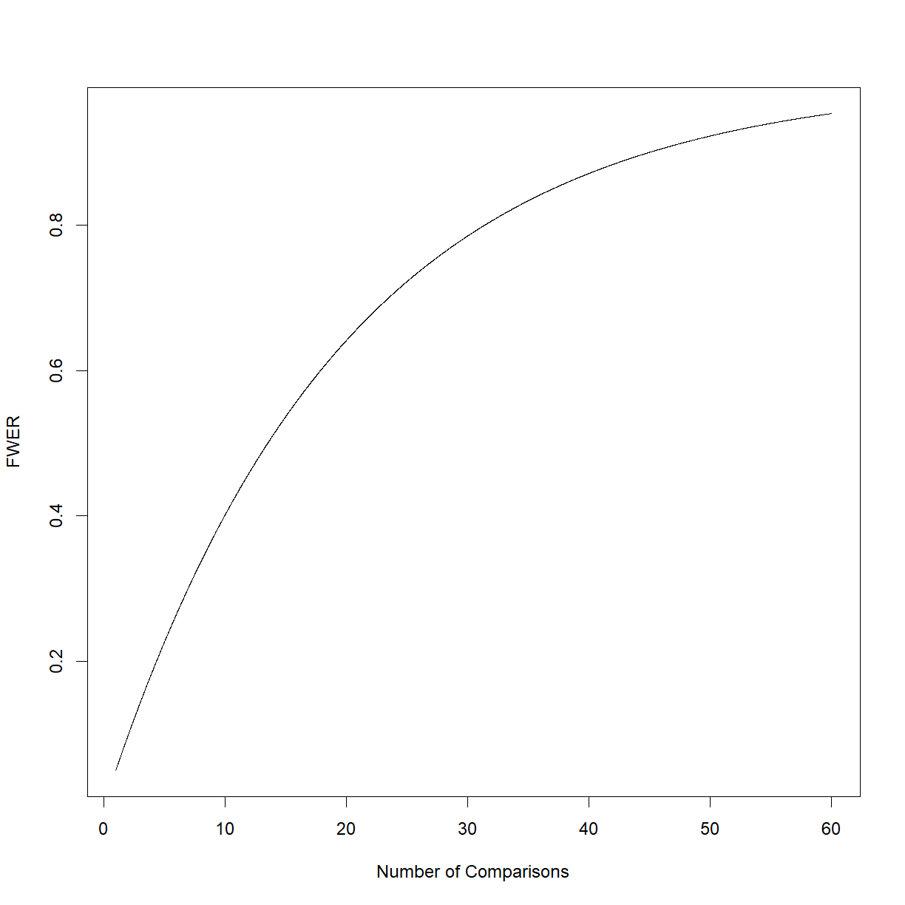
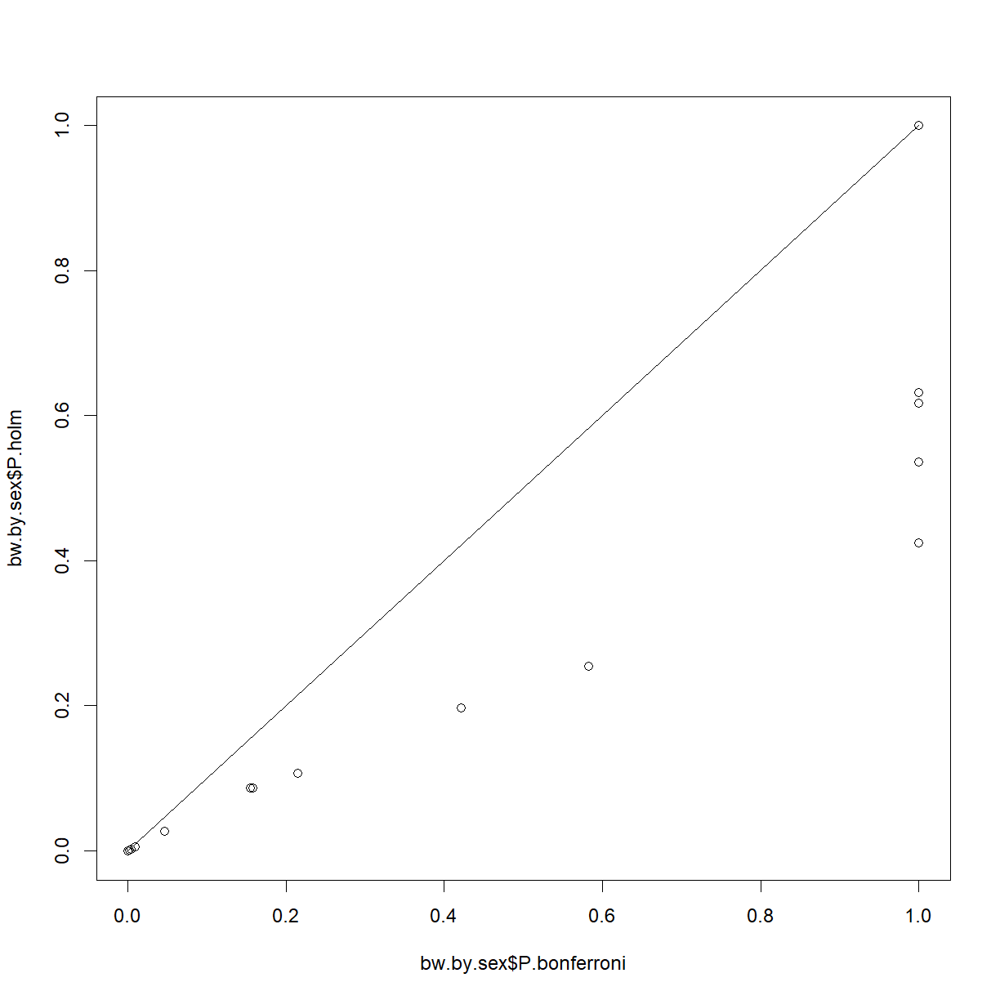
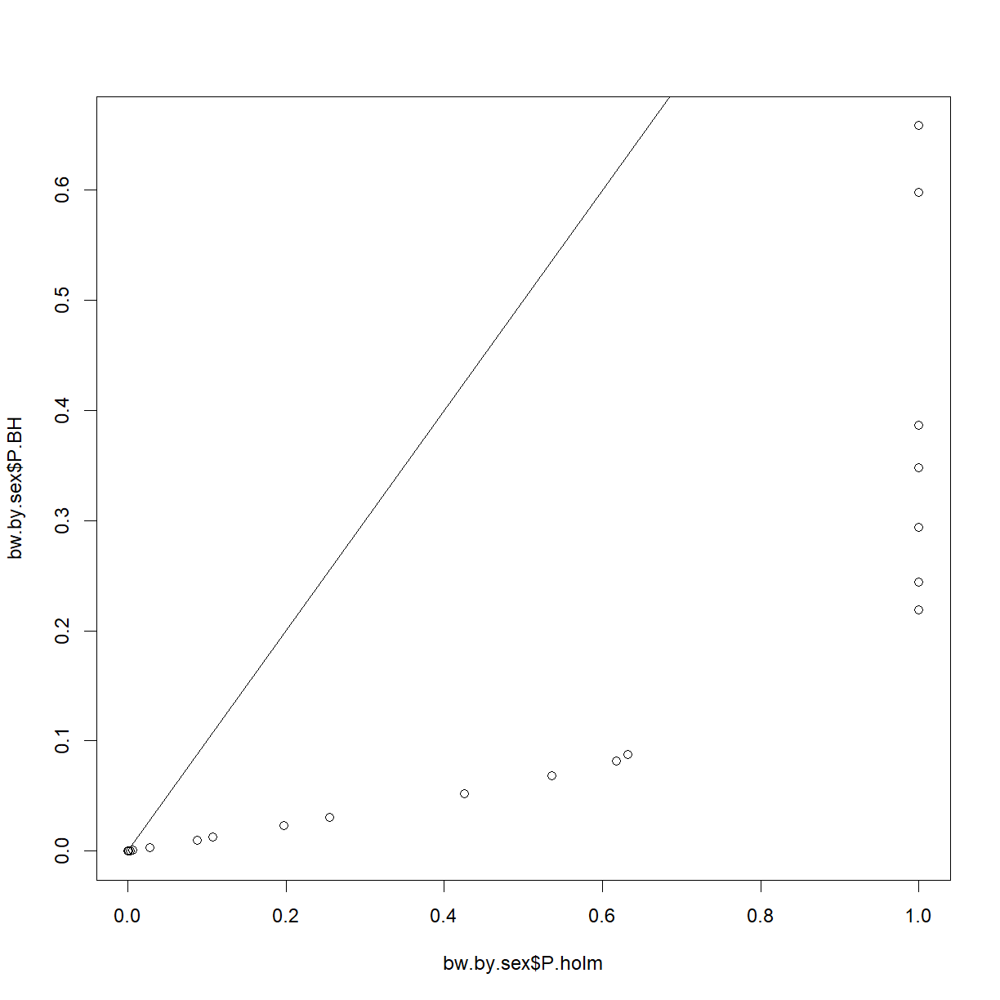
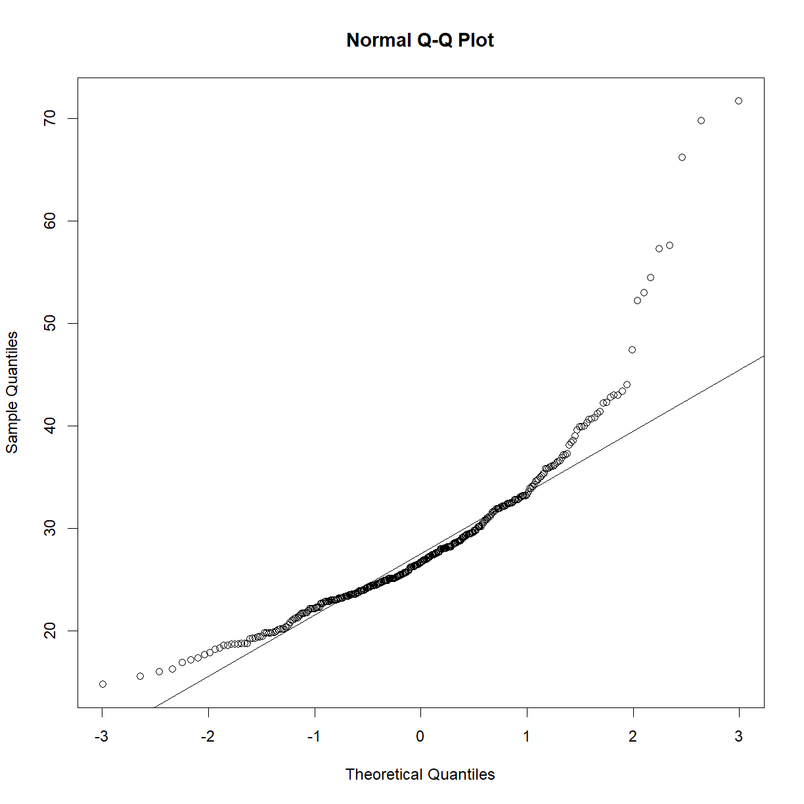
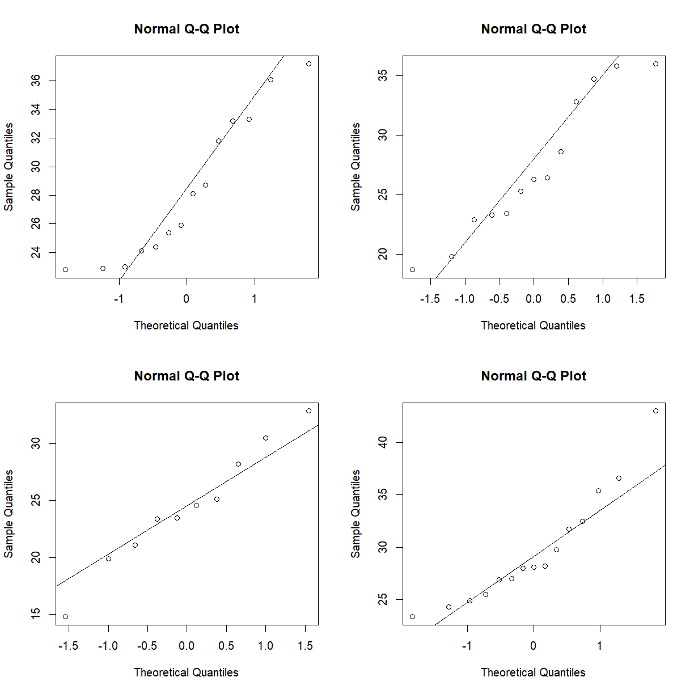
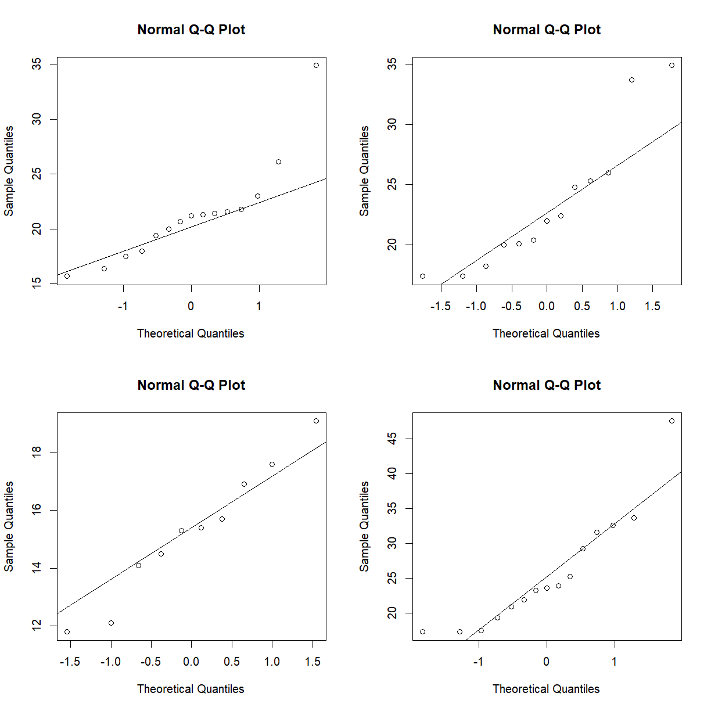

<!doctype html>
<html lang="en">
  <head>
    <meta charset="utf-8">
    <meta http-equiv="X-UA-Compatible" content="IE=edge">
    <meta http-equiv="last-modified" content="2023-09-04 21:35:56 -0700">
    <meta name="viewport" content="width=device-width, initial-scale=1">
    <!-- meta "search-domain" used for google site search function google_search() -->
    <meta name="search-domain" value="">
    <link rel="stylesheet" type="text/css" href="../assets/css/bootstrap.css" />
    <link rel="stylesheet" type="text/css" href="../assets/css/bootstrap-theme.css" />
    <link rel="stylesheet" type="text/css" href="../assets/css/lesson.css" />
    <link rel="stylesheet" type="text/css" href="../assets/css/syntax.css" />

    


    <!-- Favicons for everyone -->
    <link rel="apple-touch-icon-precomposed" sizes="57x57" href="../assets/favicons/mcb585/apple-touch-icon-57x57.png" />
    <link rel="apple-touch-icon-precomposed" sizes="114x114" href="../assets/favicons/mcb585/apple-touch-icon-114x114.png" />
    <link rel="apple-touch-icon-precomposed" sizes="72x72" href="../assets/favicons/mcb585/apple-touch-icon-72x72.png" />
    <link rel="apple-touch-icon-precomposed" sizes="144x144" href="../assets/favicons/mcb585/apple-touch-icon-144x144.png" />
    <link rel="apple-touch-icon-precomposed" sizes="60x60" href="../assets/favicons/mcb585/apple-touch-icon-60x60.png" />
    <link rel="apple-touch-icon-precomposed" sizes="120x120" href="../assets/favicons/mcb585/apple-touch-icon-120x120.png" />
    <link rel="apple-touch-icon-precomposed" sizes="76x76" href="../assets/favicons/mcb585/apple-touch-icon-76x76.png" />
    <link rel="apple-touch-icon-precomposed" sizes="152x152" href="../assets/favicons/mcb585/apple-touch-icon-152x152.png" />
    <link rel="icon" type="image/png" href="../assets/favicons/mcb585/favicon-196x196.png" sizes="196x196" />
    <link rel="icon" type="image/png" href="../assets/favicons/mcb585/favicon-96x96.png" sizes="96x96" />
    <link rel="icon" type="image/png" href="../assets/favicons/mcb585/favicon-32x32.png" sizes="32x32" />
    <link rel="icon" type="image/png" href="../assets/favicons/mcb585/favicon-16x16.png" sizes="16x16" />
    <link rel="icon" type="image/png" href="../assets/favicons/mcb585/favicon-128.png" sizes="128x128" />
    <meta name="application-name" content=" - MCB 585: Multidisciplinary/Quantitative Approaches to Solving Biological Problems"/>
    <meta name="msapplication-TileColor" content="#FFFFFF" />
    <meta name="msapplication-TileImage" content="../assets/favicons/mcb585/mstile-144x144.png" />
    <meta name="msapplication-square70x70logo" content="../assets/favicons/mcb585/mstile-70x70.png" />
    <meta name="msapplication-square150x150logo" content="../assets/favicons/mcb585/mstile-150x150.png" />
    <meta name="msapplication-wide310x150logo" content="../assets/favicons/mcb585/mstile-310x150.png" />
    <meta name="msapplication-square310x310logo" content="../assets/favicons/mcb585/mstile-310x310.png" />


    <!-- HTML5 shim and Respond.js for IE8 support of HTML5 elements and media queries -->
    <!-- WARNING: Respond.js doesn't work if you view the page via file:// -->
    <!--[if lt IE 9]>
	<script src="https://oss.maxcdn.com/html5shiv/3.7.2/html5shiv.min.js"></script>
	<script src="https://oss.maxcdn.com/respond/1.4.2/respond.min.js"></script>
	<![endif]-->
    <title>MCB 585: Multidisciplinary/Quantitative Approaches to Solving Biological Problems: Multiple Test Correction</title>
  </head>
  <body>

    


    <div class="container">
      


<nav class="navbar navbar-default">
  <div class="container-fluid">
    <div class="navbar-header">
      <button type="button" class="navbar-toggle collapsed" data-toggle="collapse" data-target="#bs-example-navbar-collapse-1" aria-expanded="false">
        <span class="sr-only">Toggle navigation</span>
        <span class="icon-bar"></span>
        <span class="icon-bar"></span>
        <span class="icon-bar"></span>
      </button>

      
      
      <a href="https://georgesutphin.github.io/MCB585/" class="pull-left">
        
      </a>
      

      
      <a class="navbar-brand" href="../">Home</a>

    </div>
    <div class="collapse navbar-collapse" id="bs-example-navbar-collapse-1">
      <ul class="nav navbar-nav">

	
        <li><a href="../CODE_OF_CONDUCT.html">Code of Conduct</a></li>

        
	
        <li><a href="../setup.html">Setup</a></li>

        
        <li class="dropdown">
          <a href="../" class="dropdown-toggle" data-toggle="dropdown" role="button" aria-haspopup="true" aria-expanded="false">Episodes <span class="caret"></span></a>
          <ul class="dropdown-menu">
            
            <li><a href="../01-class-introduction/index.html">Getting started with R and RStudio</a></li>
            
            <li><a href="../01-oyo-introduction/index.html">Getting started with R and RStudio -- Additional Detail</a></li>
            
            <li><a href="../02-class-R-data-types-structures/index.html">Basic Data Types and Data Structures in R</a></li>
            
            <li><a href="../02-oyo-R-data-types-in-depth/index.html">R Data Types -- In-Depth</a></li>
            
            <li><a href="../03-class-data-frames/index.html">Data Frames, Basic Indexing, Reading/Writing Data</a></li>
            
            <li><a href="../03-oyo-Lists/index.html">Lists and Advanced Indexing</a></li>
            
            <li><a href="../04-class-manipulating-plotting-data/index.html">Manipulating and Plotting Data</a></li>
            
            <li><a href="../04-oyo-advanced-data-manipulation/index.html">Advanced Data Manipulation and Plotting</a></li>
            
            <li><a href="../05-class-decisions-loops/index.html">Decision Making and Loops</a></li>
            
            <li><a href="../05-oyo-more-decisions-loops/index.html">Decision Making and Loops -- Additional Detail</a></li>
            
            <li><a href="../06-class-distributions/index.html">Distributions and Normality</a></li>
            
            <li><a href="../06-oyo-more-distributions/index.html">Distributions and Normality -- Additional Detail</a></li>
            
            <li><a href="../07-class-hypothesis-testing/index.html">Hypothesis Testing</a></li>
            
            <li><a href="../07-oyo-multiple-test-correction/index.html">Multiple Test Correction</a></li>
            
            <li><a href="../08-class-survival-analysis/index.html">Survival Analysis</a></li>
            
            <li><a href="../08-oyo-advanced-survival-analysis/index.html">Advanced Survival Analysis</a></li>
            
            <li><a href="../09-class-power-analysis/index.html">Power Analysis</a></li>
            
            <li><a href="../09-oyo-simulation/index.html">Simulating Experiments</a></li>
            
            <li><a href="../99-projects/index.html">Final Projects</a></li>
            
	    <li role="separator" class="divider"></li>
            <li><a href="../aio.html">All in one page (Beta)</a></li>
          </ul>
        </li>
	

	
	<!--
        <li class="dropdown">
          <a href="../" class="dropdown-toggle" data-toggle="dropdown" role="button" aria-haspopup="true" aria-expanded="false">Extras <span class="caret"></span></a>
          <ul class="dropdown-menu">
            <li><a href="../reference.html">Reference</a></li>
            
            <li><a href="../about/">About</a></li>
            
            <li><a href="../discuss/">Discussion</a></li>
            
            <li><a href="../figures/">Figures</a></li>
            
            <li><a href="../guide/">Instructor Notes</a></li>
            
          </ul>
        </li>
	-->

	
        <li><a href="../LICENSE.html">About</a></li>
	<!--
	
	<li><a href="/edit//_episodes_rmd/07-oyo-multiple-test-correction.Rmd">Improve this page <span class="glyphicon glyphicon-pencil" aria-hidden="true"></span></a></li>
	
	-->
      </ul>
      <form class="navbar-form navbar-right" role="search" id="search" onsubmit="google_search(); return false;">
        <div class="form-group">
          <input type="text" id="google-search" placeholder="Search..." aria-label="Google site search">
        </div>
      </form>
    </div>
  </div>
</nav>


<div class="row">
  <div class="col-xs-1">
    <h3 class="text-left">
      
      <a href="../07-class-hypothesis-testing/index.html"><span class="glyphicon glyphicon-menu-left" aria-hidden="true"></span><span class="sr-only">previous episode</span></a>
      
    </h3>
  </div>
  <div class="col-xs-10">
    
    <h3 class="maintitle"><a href="../">MCB 585: Multidisciplinary/Quantitative Approaches to Solving Biological Problems</a></h3>
    
  </div>
  <div class="col-xs-1">
    <h3 class="text-right">
      
      <a href="../08-class-survival-analysis/index.html"><span class="glyphicon glyphicon-menu-right" aria-hidden="true"></span><span class="sr-only">next episode</span></a>
      
    </h3>
  </div>
</div>

<article>
<div class="row">
  <div class="col-md-1">
  </div>
  <div class="col-md-10">
    <h1 class="maintitle">Multiple Test Correction</h1>
  </div>
  <div class="col-md-1">
  </div>
</div>


<blockquote class="objectives">
  <h2>Overview</h2>

  <div class="row">
    <div class="col-md-3">
      <strong>Class Date:</strong> 9/14/2023 -- On Your Own
      <br/>
      <strong>Teaching:</strong> 90 min
      <br/>
      <strong>Exercises:</strong> 30 min
    </div>
    <div class="col-md-9">
      <strong>Questions</strong>
      <ul>
	
	<li><p>What is the consequence of running multiple statistical comparisons?</p>
</li>
	
	<li><p>How do we define a family of tests?</p>
</li>
	
	<li><p>What are the strategies for controlling error in multiple testing?</p>
</li>
	
      </ul>
    </div>
  </div>

  <div class="row">
    <div class="col-md-3">
    </div>
    <div class="col-md-9">
      <strong>Objectives</strong>
      <ul>
	
	<li><p>Understand why we correct our interpretation of statistical tests when running multiple tests in a study.</p>
</li>
	
	<li><p>Understand what each common type of multiple test comparison controls for and when to choose each method.</p>
</li>
	
	<li><p>Use the p.adjust() function in R to correct P-values for multiple comparisons.</p>
</li>
	
      </ul>
    </div>
  </div>

</blockquote>

<h2 id="on-your-own">On Your Own</h2>

<h3 id="multiple-test-correction">Multiple test correction</h3>

<p>When you run a statistical test, you draw a conclusion based on the probability of observing the data from your sample if the null hypothesis is true. Each time you run a statistical test, there is a chance of making either a Type I Error (rejecting \(H_0\) when \(H_0\) is true) or a Type II Error (accepting \(H_0\) when \(H_1\) is true).</p>

<p>As we discussed <em>In Class</em>, we set the P-value threshold, \(\alpha\), in such a way that we control Type I Errors. The commonly used value, \(\alpha = 0.05\), means that there is a 5% change of getting the observed result on any given test even if \(H_0\) is true. Alternatively, if we were to run the experiment repeatedly, we would expect the statistical test to return 1 P-value below the threshold in every 20 repeats, on average. Note that this <em>does not</em> mean that there is a 5% chance that the \(H_0\) is true based on the observed data.</p>

<p>So what happens when, within a given study, you run 20 statistical tests? Randall Monroe gives an excellent example of what can happen (and how it can be, and often is, misinterpreted):</p>

<figure>
  <!--  -->
  
  <figcaption>Image credit <a href="https://xkcd.com/882/">xkcd.com</a></figcaption>
</figure>

<p> </p>

<p>In this fictitious example, the researchers test whether acne is associated with each of 20 different jelly bean colors, and find that eating green jelly beans is significantly associated with acne (!!).</p>

<p>Does this mean that green jelly beans cause acne? No, of course not. Even if the association were real, perhaps people with acne just like green jelly beans better? However, even that is going too far. Recall that setting \(\alpha\) = 0.05 means that we expect to reject \(H_0\) 5% of the time (or 1 time in 20) when \(H_0\) is true. So the illustrated test gave the expected outcome if jelly beans (of any color) had no connection to acne.</p>

<p>We have to consider the <em>family</em> of tests that we are conducting within a study to draw appropriate conclusions about our data. The process of multiple test correction formalizes this procedure.</p>

<blockquote class="callout">
  <h2 id="all-in-the-family">All in the family</h2>

  <p>We said that you have to consider your P-values in the 
context of the <em>family</em> of tests that you are running in your 
study. So what do we mean by  family? It turns out that this 
term is not well defined.</p>

  <p>The  XKCD jelly bean example is one extreme, where the 
P-value for each individual test in a clearly linked set 
of tests was interpreted on it’s own. The set of jelly bean 
tests were obviously related, and should be considered as a 
whole. Thus we consider these a <em>family</em>.</p>

  <p> </p>

  <p>Near the other extreme is your average Cell paper, which can 
have 10s to 100,000s (or more in the age of systems biology) 
statistical tests in one paper. Should you group all of the 
various P-values calculated in one paper across figures and 
data types and treat them all as a family? Clearly not.</p>

  <p> </p>

  <p>So where do you draw the line? Usually a family of tests are 
a series of statistical tests on similar data types using 
the same statistical test interpretation that are carried 
out together. Usually the interpretation of each test in 
the family will have some relation to the other test. 
Perhaps you are running a screen and want to pick candidates 
for further testing, for example. There is not a bright line 
that separates an independent series of tests from a family 
of tests. Ultimately, you have to use your own judgement.</p>
</blockquote>

<p> </p>

<p>There are a variety of approaches to correcting for multiple comparisons. The two most commonly used criteria are:</p>

<ul>
  <li>Control <em>familywise error rate (FWER)</em></li>
  <li>Control <em>false discovery rate (FDR)</em></li>
</ul>

<p>These tend to be employed in different types of studies with different goals. We will explore the R implementation of the most widely used tests in these categories.</p>

<hr />
<h3 id="controlling-familywise-error-rate-fwer">Controlling Familywise Error Rate (FWER)</h3>

<p>The most conservative version of a multiple test correction is designed to control the <em>familywise error rate</em> or <em>FWER</em>. The FWER is the probability that your family of tests includes <em>one or more</em> false positives (Type I Errors). FWER is the simplest to understand, because it is the direct familywise analog to \(\alpha\) for a single test.</p>

<p>We can calculate the FWER for \(\alpha = 0.05\) as the number of comparisons, \(n_{tests}\), increases:</p>

<p>      \(FWER = 1 - 0.95^n_{tests}\)</p>

<p>Plotting this equation:</p>

<p></p>

<p> </p>

<p>As you repeat your tests, the chance that at least one result will be a false positive increases rapidly for the first few tests and begins to approach certainty once you get to around 60 tests or so. Keep in mind that this is <em>at least</em> one, so the higher you go the more false positives you will tend to accumulate.</p>

<p> </p>
<h4 id="the-bonferroni-correction">The Bonferroni correction</h4>

<p>The most direct way to control FWER is to simply lower the critical P-value to the point where your expected number of Type I Errors once again falls below your original single-test threshold. To do this, divide your original \(\alpha\) by the number of tests conducted:</p>

<p>      \(\alpha_{corrected} = \frac{alpha}{n_{tests}}\)</p>

<p> </p>

<p>This is called the Bonferroni correction, after <a href="https://en.wikipedia.org/wiki/Carlo_Emilio_Bonferroni">Carlo Emilio Bonferroni</a>. This correction makes no assumptions about your data, population, or sampling method, so it works for any situation. All you need are your P-values from each individual statistical test, and the number of tests run. For the jelly bean example, the researchers performed 20 tests with \(\alpha = 0.05\), so:</p>

<p>      \(\alpha_{corrected} = \frac{alpha}{n_{tests}} = \frac{0.05}{20} = 0.0025\)</p>

<p> </p>

<p>We now need a much lower P-value to reject the null hypothesis. As a practical alternative, we can leave \(\alpha\) alone and correct the P-value by multiplying by the number of tests (max P-value is always 1):</p>

<p>      \(P_{corrected} = min(P*n_{tests}, 1)\)</p>

<p> </p>

<p>Let’s look at a real example. A mouse aging study was conducted on a set of commonly used inbred mouse strains. While longevity was the primary endpoint, the researchers also collected body composition data for each strain across lifespan. Let’s start by laoding the body composition dataset and taking a quick look at the structure:</p>

<div class="language-r highlighter-rouge"><div class="highlight"><pre class="highlight"><code><span class="n">body.comp</span><span class="w"> </span><span class="o">&lt;-</span><span class="w"> </span><span class="n">read.delim</span><span class="p">(</span><span class="s2">"data/inbred.body.composition.txt"</span><span class="p">)</span><span class="w">
</span><span class="n">str</span><span class="p">(</span><span class="n">body.comp</span><span class="p">)</span><span class="w">
</span></code></pre></div></div>

<div class="language-plaintext output highlighter-rouge"><div class="highlight"><pre class="highlight"><code>'data.frame':	1187 obs. of  10 variables:
 $ strain       : chr  "129S1/SvImJ" "129S1/SvImJ" "129S1/SvImJ" "129S1/SvImJ" ...
 $ sex          : chr  "f" "f" "f" "f" ...
 $ animal_id    : chr  "SC-7749" "SC-7751" "SC-7752" "SC-7747" ...
 $ age          : int  6 6 6 6 6 6 6 6 6 6 ...
 $ body_weight_g: num  20.2 22.8 22.5 23.1 21.6 19.6 24 27.4 29.4 28.3 ...
 $ BMI          : num  2.66 2.88 2.97 2.92 2.85 2.71 2.96 3.38 3.33 3.49 ...
 $ percent_fat  : num  22.1 22.2 22.6 22.8 23.1 24 24.3 28.3 17.6 17.7 ...
 $ total_mass_g : num  17.9 19.8 19.4 20.6 18.9 17.3 21.3 25.1 26.5 25.9 ...
 $ lean_mass_g  : chr  "13.9" "15.4" "15" "15.9" ...
 $ fat_mass_g   : num  4.45 5.08 5.08 5.27 4.99 4.69 5.84 7.76 5.16 5 ...
</code></pre></div></div>

<p> </p>

<p>Let’s imagine that we want to identify strains with a body weight difference between males and females as part of a study to examine sex differences during aging. We can perform an analysis to calculate the t-test P-value comparing body weight of male vs. female mice in each strain.</p>

<div class="language-r highlighter-rouge"><div class="highlight"><pre class="highlight"><code><span class="c1"># grab strain list</span><span class="w">
</span><span class="n">strain.list</span><span class="w"> </span><span class="o">&lt;-</span><span class="w"> </span><span class="n">unique</span><span class="p">(</span><span class="n">body.comp</span><span class="o">$</span><span class="n">strain</span><span class="p">)</span><span class="w">

</span><span class="c1"># initialize data frame to store output information (P-values)</span><span class="w">
</span><span class="n">bw.by.sex</span><span class="w"> </span><span class="o">&lt;-</span><span class="w"> </span><span class="n">data.frame</span><span class="p">(</span><span class="n">strain</span><span class="w"> </span><span class="o">=</span><span class="w"> </span><span class="n">strain.list</span><span class="p">,</span><span class="w">
                        </span><span class="n">P</span><span class="w"> </span><span class="o">=</span><span class="w"> </span><span class="n">numeric</span><span class="p">(</span><span class="n">length</span><span class="w"> </span><span class="o">=</span><span class="w"> </span><span class="nf">length</span><span class="p">(</span><span class="n">strain.list</span><span class="p">)))</span><span class="w">

</span><span class="c1"># cycle through each strain and compare male and female body weight </span><span class="w">
</span><span class="c1"># using a t-test</span><span class="w">
</span><span class="k">for</span><span class="w"> </span><span class="p">(</span><span class="n">i.strain</span><span class="w"> </span><span class="k">in</span><span class="w"> </span><span class="m">1</span><span class="o">:</span><span class="nf">length</span><span class="p">(</span><span class="n">strain.list</span><span class="p">))</span><span class="w"> </span><span class="p">{</span><span class="w">
  </span><span class="c1"># grab current strain name</span><span class="w">
  </span><span class="n">strain.c</span><span class="w"> </span><span class="o">&lt;-</span><span class="w"> </span><span class="n">strain.list</span><span class="p">[</span><span class="n">i.strain</span><span class="p">]</span><span class="w">
  
  </span><span class="c1"># run t-test for male vs. female body weight for current strain</span><span class="w">
  </span><span class="n">t.test.c</span><span class="w"> </span><span class="o">&lt;-</span><span class="w"> </span><span class="n">t.test</span><span class="p">(</span><span class="n">body_weight_g</span><span class="w"> </span><span class="o">~</span><span class="w"> </span><span class="n">sex</span><span class="p">,</span><span class="w"> 
                     </span><span class="n">data</span><span class="w"> </span><span class="o">=</span><span class="w"> </span><span class="n">body.comp</span><span class="p">[</span><span class="n">body.comp</span><span class="o">$</span><span class="n">strain</span><span class="w"> </span><span class="o">==</span><span class="w"> </span><span class="n">strain.c</span><span class="p">,],</span><span class="w">
                     </span><span class="n">type</span><span class="w"> </span><span class="o">=</span><span class="w"> </span><span class="s2">"two.sample"</span><span class="p">,</span><span class="w">
                     </span><span class="n">alternative</span><span class="w"> </span><span class="o">=</span><span class="w"> </span><span class="s2">"two.sided"</span><span class="p">)</span><span class="w">
  
  </span><span class="c1"># update data frame</span><span class="w">
  </span><span class="n">bw.by.sex</span><span class="o">$</span><span class="n">P</span><span class="p">[</span><span class="n">i.strain</span><span class="p">]</span><span class="w"> </span><span class="o">&lt;-</span><span class="w"> </span><span class="n">t.test.c</span><span class="o">$</span><span class="n">p.value</span><span class="w">
</span><span class="p">}</span><span class="w">

</span><span class="c1"># display strains with significant P-values (alpha &lt; 0.05)</span><span class="w">
</span><span class="n">strains.bw.by.sex</span><span class="w"> </span><span class="o">&lt;-</span><span class="w"> </span><span class="n">bw.by.sex</span><span class="o">$</span><span class="n">strain</span><span class="p">[</span><span class="n">bw.by.sex</span><span class="o">$</span><span class="n">P</span><span class="w"> </span><span class="o">&lt;</span><span class="w"> </span><span class="m">0.05</span><span class="p">]</span><span class="w">
</span><span class="n">strains.bw.by.sex</span><span class="w">
</span></code></pre></div></div>

<div class="language-plaintext output highlighter-rouge"><div class="highlight"><pre class="highlight"><code> [1] "129S1/SvImJ"       "BALB/cByJ"         "BUB/BnJ"          
 [4] "C3H/HeJ"           "C57BL/10J"         "C57BL/6J"         
 [7] "C57BLKS/J"         "C57BR/cdJ"         "C57L/J"           
[10] "FVB/NJ"            "LP/J"              "MOLF/EiJ"         
[13] "NOD.B10Sn-H2&lt;b&gt;/J" "NON/ShiLtJ"        "P/J"              
[16] "PL/J"              "PWD/PhJ"           "RIIIS/J"          
[19] "SM/J"              "SWR/J"             "WSB/EiJ"          
</code></pre></div></div>

<div class="language-r highlighter-rouge"><div class="highlight"><pre class="highlight"><code><span class="c1"># note the number of strains with a significant body weight difference</span><span class="w">
</span><span class="c1"># between sexes relative to the total number of strains</span><span class="w">
</span><span class="nf">length</span><span class="p">(</span><span class="n">strain.list</span><span class="p">)</span><span class="w">
</span></code></pre></div></div>

<div class="language-plaintext output highlighter-rouge"><div class="highlight"><pre class="highlight"><code>[1] 32
</code></pre></div></div>

<div class="language-r highlighter-rouge"><div class="highlight"><pre class="highlight"><code><span class="nf">length</span><span class="p">(</span><span class="n">strains.bw.by.sex</span><span class="p">)</span><span class="w">
</span></code></pre></div></div>

<div class="language-plaintext output highlighter-rouge"><div class="highlight"><pre class="highlight"><code>[1] 21
</code></pre></div></div>

<p> </p>

<p>We have 21 strains where sex significantly impacts body weight according to our initial approach. However, with 32 strains we ran 32 t-tests, and our threshold \(\alpha = 0.05\) means that we expect 1 to 2 of these to be false positives. Let’s see how the results change when we apply the Bonferroni multiple test correction to minimize our change of including a false positive.</p>

<div class="language-r highlighter-rouge"><div class="highlight"><pre class="highlight"><code><span class="c1"># add a row for corrected P-value</span><span class="w">
</span><span class="n">bw.by.sex</span><span class="o">$</span><span class="n">P.bonferroni</span><span class="w"> </span><span class="o">&lt;-</span><span class="w"> </span><span class="kc">NA</span><span class="w">

</span><span class="c1"># calculate Bonferroni correction manually, using the min() function</span><span class="w">
</span><span class="c1"># to correct any P-value that ends up &gt; 1 to 1 (note that min is not a </span><span class="w">
</span><span class="c1"># vectorized function, so we have to construct a for loop or use apply)</span><span class="w">
</span><span class="k">for</span><span class="w"> </span><span class="p">(</span><span class="n">i</span><span class="w"> </span><span class="k">in</span><span class="w"> </span><span class="m">1</span><span class="o">:</span><span class="nf">length</span><span class="p">(</span><span class="n">bw.by.sex</span><span class="o">$</span><span class="n">P</span><span class="p">))</span><span class="w"> </span><span class="p">{</span><span class="w">
  </span><span class="n">bw.by.sex</span><span class="o">$</span><span class="n">P.bonferroni</span><span class="p">[</span><span class="n">i</span><span class="p">]</span><span class="w"> </span><span class="o">&lt;-</span><span class="w"> </span><span class="nf">min</span><span class="p">(</span><span class="n">bw.by.sex</span><span class="o">$</span><span class="n">P</span><span class="p">[</span><span class="n">i</span><span class="p">]</span><span class="o">*</span><span class="nf">length</span><span class="p">(</span><span class="n">bw.by.sex</span><span class="o">$</span><span class="n">P</span><span class="p">),</span><span class="w"> </span><span class="m">1</span><span class="p">)</span><span class="w">
</span><span class="p">}</span><span class="w">
</span></code></pre></div></div>

<p> </p>

<p>R has a function, <code class="language-plaintext highlighter-rouge">p.adjust()</code> which automatically calculates the adjusted P-value using a variety of methods:</p>

<div class="language-r highlighter-rouge"><div class="highlight"><pre class="highlight"><code><span class="c1"># calculate Bonferroni corrected P-value using p.adjust()</span><span class="w">
</span><span class="n">P.bonferroni.auto</span><span class="w"> </span><span class="o">&lt;-</span><span class="w"> </span><span class="n">p.adjust</span><span class="p">(</span><span class="n">bw.by.sex</span><span class="o">$</span><span class="n">P</span><span class="p">,</span><span class="w"> </span><span class="n">method</span><span class="w"> </span><span class="o">=</span><span class="w"> </span><span class="s2">"bonferroni"</span><span class="p">)</span><span class="w">

</span><span class="c1"># check against manual </span><span class="w">
</span><span class="n">bw.by.sex</span><span class="o">$</span><span class="n">P.bonferroni</span><span class="w"> </span><span class="o">==</span><span class="w"> </span><span class="n">P.bonferroni.auto</span><span class="w">
</span></code></pre></div></div>

<div class="language-plaintext output highlighter-rouge"><div class="highlight"><pre class="highlight"><code> [1] TRUE TRUE TRUE TRUE TRUE TRUE TRUE TRUE TRUE TRUE TRUE TRUE TRUE TRUE TRUE
[16] TRUE TRUE TRUE TRUE TRUE TRUE TRUE TRUE TRUE TRUE TRUE TRUE TRUE TRUE TRUE
[31] TRUE TRUE
</code></pre></div></div>

<div class="language-r highlighter-rouge"><div class="highlight"><pre class="highlight"><code><span class="c1"># how many strains now have significant differences?</span><span class="w">
</span><span class="n">strains.bw.by.sex.bf</span><span class="w"> </span><span class="o">&lt;-</span><span class="w"> </span><span class="n">bw.by.sex</span><span class="o">$</span><span class="n">strain</span><span class="p">[</span><span class="n">bw.by.sex</span><span class="o">$</span><span class="n">P.bonferroni</span><span class="w"> </span><span class="o">&lt;</span><span class="w"> </span><span class="m">0.05</span><span class="p">]</span><span class="w">
</span><span class="n">strains.bw.by.sex.bf</span><span class="w">
</span></code></pre></div></div>

<div class="language-plaintext output highlighter-rouge"><div class="highlight"><pre class="highlight"><code> [1] "BALB/cByJ"         "BUB/BnJ"           "C3H/HeJ"          
 [4] "C57BL/10J"         "C57BL/6J"          "C57BLKS/J"        
 [7] "C57L/J"            "LP/J"              "NOD.B10Sn-H2&lt;b&gt;/J"
[10] "P/J"               "PL/J"              "RIIIS/J"          
[13] "SM/J"              "SWR/J"            
</code></pre></div></div>

<div class="language-r highlighter-rouge"><div class="highlight"><pre class="highlight"><code><span class="nf">length</span><span class="p">(</span><span class="n">strains.bw.by.sex.bf</span><span class="p">)</span><span class="w">
</span></code></pre></div></div>

<div class="language-plaintext output highlighter-rouge"><div class="highlight"><pre class="highlight"><code>[1] 14
</code></pre></div></div>

<p> </p>

<p>Applying the Bonferroni method reduces the number of strains with significant body weight between sexes from 21 to 14.</p>

<p>As you may already realize, the Bonferroni test reduces Type I Error rates \((\alpha)\) at the cost of increasing the risk of committing a Type II Error \((\beta)\); aka “false negative”; accepting \(H_0\) when \(H_1\) is true), and thus reducing power \((power = 1 - \beta)\)) to detect real differences when they are present. Thankfully, there is a universally better option that does at least a bit better.</p>

<p> </p>
<h4 id="the-holm-bonferroni-correction">The Holm-Bonferroni correction</h4>

<p>The primary advantage to the Bonferroni is that the procedure is intuitive and the calculations can be done in your head. This makes it ideal for a back-of-the-envelope first-pass examination of you data to see if you have any comparisons that are in the ballpark.</p>

<p>There is a closely related procedure called the Holm-Bonferroni (or just Holm) method for multiple test correction, named for Sture Holm, who codified the method and is currently serving as Professor Emeritus of Mathematical Sciences at Chalmers University. The procedure and proof is more complicated. While it can be done by hand without too much trouble, we will generally require a computer for efficient processing (which is the point of this course anyway!). If you are interested in the mathematics, there are many places that describe the underlying principles, and the Wikipedia article on <a href="https://en.wikipedia.org/wiki/Holm%E2%80%93Bonferroni_method">Holm-Bonferroni method</a> does a decent job.</p>

<p>The bottom line is that the Holm method does just as good a job at controlling FWER, but does so with better power in all cases. This method is also available in the <code class="language-plaintext highlighter-rouge">p.adjust()</code> function:</p>

<div class="language-r highlighter-rouge"><div class="highlight"><pre class="highlight"><code><span class="c1"># calculate Holm-Bonferroni corrected P-value using p.adjust()</span><span class="w">
</span><span class="n">bw.by.sex</span><span class="o">$</span><span class="n">P.holm</span><span class="w"> </span><span class="o">&lt;-</span><span class="w"> </span><span class="n">p.adjust</span><span class="p">(</span><span class="n">bw.by.sex</span><span class="o">$</span><span class="n">P</span><span class="p">,</span><span class="w"> </span><span class="n">method</span><span class="w"> </span><span class="o">=</span><span class="w"> </span><span class="s2">"holm"</span><span class="p">)</span><span class="w">

</span><span class="c1"># how many strains now have significant differences?</span><span class="w">
</span><span class="n">strains.bw.by.sex.holm</span><span class="w"> </span><span class="o">&lt;-</span><span class="w"> </span><span class="n">bw.by.sex</span><span class="o">$</span><span class="n">strain</span><span class="p">[</span><span class="n">bw.by.sex</span><span class="o">$</span><span class="n">P.bonferroni</span><span class="w"> </span><span class="o">&lt;</span><span class="w"> </span><span class="m">0.05</span><span class="p">]</span><span class="w">
</span><span class="n">strains.bw.by.sex.holm</span><span class="w">
</span></code></pre></div></div>

<div class="language-plaintext output highlighter-rouge"><div class="highlight"><pre class="highlight"><code> [1] "BALB/cByJ"         "BUB/BnJ"           "C3H/HeJ"          
 [4] "C57BL/10J"         "C57BL/6J"          "C57BLKS/J"        
 [7] "C57L/J"            "LP/J"              "NOD.B10Sn-H2&lt;b&gt;/J"
[10] "P/J"               "PL/J"              "RIIIS/J"          
[13] "SM/J"              "SWR/J"            
</code></pre></div></div>

<div class="language-r highlighter-rouge"><div class="highlight"><pre class="highlight"><code><span class="nf">length</span><span class="p">(</span><span class="n">strains.bw.by.sex.holm</span><span class="p">)</span><span class="w">
</span></code></pre></div></div>

<div class="language-plaintext output highlighter-rouge"><div class="highlight"><pre class="highlight"><code>[1] 14
</code></pre></div></div>

<p> </p>

<p>Still 14 strains, so the Holm method produces similar results to the Bonferroni in this case. How do the P-values compare?</p>

<div class="language-r highlighter-rouge"><div class="highlight"><pre class="highlight"><code><span class="c1"># plot P-values for Bonferroni vs. Holm with a line for equal values</span><span class="w">
</span><span class="n">plot</span><span class="p">(</span><span class="n">bw.by.sex</span><span class="o">$</span><span class="n">P.bonferroni</span><span class="p">,</span><span class="w"> </span><span class="n">bw.by.sex</span><span class="o">$</span><span class="n">P.holm</span><span class="p">)</span><span class="w">
</span><span class="n">lines</span><span class="p">(</span><span class="n">x</span><span class="w"> </span><span class="o">=</span><span class="w"> </span><span class="nf">c</span><span class="p">(</span><span class="m">0</span><span class="p">,</span><span class="m">1</span><span class="p">),</span><span class="w"> </span><span class="n">y</span><span class="w"> </span><span class="o">=</span><span class="w"> </span><span class="nf">c</span><span class="p">(</span><span class="m">0</span><span class="p">,</span><span class="m">1</span><span class="p">))</span><span class="w">
</span></code></pre></div></div>

<p></p>

<p> </p>

<p>Despite not finding any new significant strains, it is clear that Holm calculates a lower adjusted P-value in each case relative to Bonferroni. This visually demonstrates that Bonferroni is more conservative.</p>

<p>While the Holm method is all around better than the Bonferroni method, all FWER are very conservative, strictly limiting the probability of any Type I Error occurring to a defined maximum of 1 per family of tests. This if generally fine if you are making a few 10s of comparisons. But what about 1,000s or 100,000s of comparisons, which is commonly needed to analyze modern ‘-omics’ data? FWER methods will control Type I Errors, but will also tremendously limit your power to detect any real differences that are actually present. For large data sets, We need a different type of correction.</p>

<hr />
<h3 id="controlling-false-discovery-rate-fdr">Controlling False Discovery Rate (FDR)</h3>

<p>A second class of multiple test correction focuses on “discoveries”–comparisons with significant P-values–and limits the fraction of total discoveries that are false (i.e. the False Discovery Rate, or FDR), in contrast to FWER methods, which control the absolute number of false discoveries without regard to the total number of comparisons.</p>

<p>Let’s say we run 1000 comparisons, and 50 are significant using the uncorrected P-value (we reject \(H_0\) in 50 comparisons). FWER will ensure that we only have a small chance to reject \(H_0\) incorrectly (i.e. when \(H_0\) is, in fact, true). In the process, after correction, we only have 20 significant values remaining. In contrast, FDR analysis may remove 5, leaving 45 positives in the corrected data set, with an expectation that 4-5 of these remaining are incorrectly rejecting \(H_0\). The second approach has a lot more power to detect true differences–it potentially “discovers” ~15 true positives that were incorrectly rejected by the FWER method–at the cost of a higher Type I Error rate.</p>

<p> </p>
<h4 id="the-benjamini-hochberg-fdr-method">The Benjamini-Hochberg FDR method</h4>

<p>The most common FDR procedure is the Benjamini-Hochberg method, named for <a href="https://en.wikipedia.org/wiki/Yoav_Benjamini">Yoav Benjamini</a> and Yosef Hochberg of Tel Aviv University, who originally described the False Discovery Rate criteria for correcting multiple comparisons.. Again, for more detail on the underlying mathematics, the Wikipedia page on <a href="https://en.wikipedia.org/wiki/False_discovery_rate">False Discovery Rate</a> has a decent explanation. For our purposes, let’s look at the practical output by applying the correction to our body weight data using <code class="language-plaintext highlighter-rouge">p.adjust()</code>:</p>

<div class="language-r highlighter-rouge"><div class="highlight"><pre class="highlight"><code><span class="c1"># calculate Benjamini-Hochberg corrected P-value using p.adjust()</span><span class="w">
</span><span class="n">bw.by.sex</span><span class="o">$</span><span class="n">P.BH</span><span class="w"> </span><span class="o">&lt;-</span><span class="w"> </span><span class="n">p.adjust</span><span class="p">(</span><span class="n">bw.by.sex</span><span class="o">$</span><span class="n">P</span><span class="p">,</span><span class="w"> </span><span class="n">method</span><span class="w"> </span><span class="o">=</span><span class="w"> </span><span class="s2">"BH"</span><span class="p">)</span><span class="w">

</span><span class="c1"># how many strains now have significant differences?</span><span class="w">
</span><span class="n">strains.bw.by.sex.BH</span><span class="w"> </span><span class="o">&lt;-</span><span class="w"> </span><span class="n">bw.by.sex</span><span class="o">$</span><span class="n">strain</span><span class="p">[</span><span class="n">bw.by.sex</span><span class="o">$</span><span class="n">P.BH</span><span class="w"> </span><span class="o">&lt;</span><span class="w"> </span><span class="m">0.05</span><span class="p">]</span><span class="w">
</span><span class="n">strains.bw.by.sex.BH</span><span class="w">
</span></code></pre></div></div>

<div class="language-plaintext output highlighter-rouge"><div class="highlight"><pre class="highlight"><code> [1] "129S1/SvImJ"       "BALB/cByJ"         "BUB/BnJ"          
 [4] "C3H/HeJ"           "C57BL/10J"         "C57BL/6J"         
 [7] "C57BLKS/J"         "C57BR/cdJ"         "C57L/J"           
[10] "FVB/NJ"            "LP/J"              "MOLF/EiJ"         
[13] "NOD.B10Sn-H2&lt;b&gt;/J" "NON/ShiLtJ"        "P/J"              
[16] "PL/J"              "RIIIS/J"           "SM/J"             
[19] "SWR/J"            
</code></pre></div></div>

<div class="language-r highlighter-rouge"><div class="highlight"><pre class="highlight"><code><span class="nf">length</span><span class="p">(</span><span class="n">strains.bw.by.sex.BH</span><span class="p">)</span><span class="w">
</span></code></pre></div></div>

<div class="language-plaintext output highlighter-rouge"><div class="highlight"><pre class="highlight"><code>[1] 19
</code></pre></div></div>

<p> </p>

<p>Note that the meaning of our P-value threshold is different under FWER and FDR methods. In FDR, by setting \(\alpha = 0.05\) we are stating that we expect 5% of <em>significant P-values</em> to be false positives. Since we now have 19 strains with significant differences in body weight, we expect that ~1 of these strains does not actually have a body weight difference between sexes. Let’s compare these P-values to those calculated using the FWER method:</p>

<div class="language-r highlighter-rouge"><div class="highlight"><pre class="highlight"><code><span class="c1"># plot P-values for Bonferroni vs. Benjamini-Hochberg with a line for </span><span class="w">
</span><span class="c1"># equal values</span><span class="w">
</span><span class="n">plot</span><span class="p">(</span><span class="n">bw.by.sex</span><span class="o">$</span><span class="n">P.bonferroni</span><span class="p">,</span><span class="w"> </span><span class="n">bw.by.sex</span><span class="o">$</span><span class="n">P.BH</span><span class="p">)</span><span class="w">
</span><span class="n">lines</span><span class="p">(</span><span class="n">x</span><span class="w"> </span><span class="o">=</span><span class="w"> </span><span class="nf">c</span><span class="p">(</span><span class="m">0</span><span class="p">,</span><span class="m">1</span><span class="p">),</span><span class="w"> </span><span class="n">y</span><span class="w"> </span><span class="o">=</span><span class="w"> </span><span class="nf">c</span><span class="p">(</span><span class="m">0</span><span class="p">,</span><span class="m">1</span><span class="p">))</span><span class="w">
</span></code></pre></div></div>

<p></p>

<div class="language-r highlighter-rouge"><div class="highlight"><pre class="highlight"><code><span class="c1"># plot P-values for Holm vs. Benjamini-Hochberg with a line for equal </span><span class="w">
</span><span class="c1"># values</span><span class="w">
</span><span class="n">plot</span><span class="p">(</span><span class="n">bw.by.sex</span><span class="o">$</span><span class="n">P.holm</span><span class="p">,</span><span class="w"> </span><span class="n">bw.by.sex</span><span class="o">$</span><span class="n">P.BH</span><span class="p">)</span><span class="w">
</span><span class="n">lines</span><span class="p">(</span><span class="n">x</span><span class="w"> </span><span class="o">=</span><span class="w"> </span><span class="nf">c</span><span class="p">(</span><span class="m">0</span><span class="p">,</span><span class="m">1</span><span class="p">),</span><span class="w"> </span><span class="n">y</span><span class="w"> </span><span class="o">=</span><span class="w"> </span><span class="nf">c</span><span class="p">(</span><span class="m">0</span><span class="p">,</span><span class="m">1</span><span class="p">))</span><span class="w">
</span></code></pre></div></div>

<p></p>

<p> </p>

<p>We can see that the P-values for the Bonferroni and Holm methods are a lot more conservative than the FDR method.</p>

<p>Which approch is correct? It depends entirely on the goals of your study, and whether you can tolerate Type I or Type II Errors better within the context of those goals. A false positive is much less of an issue if you are screening a drug library for potential candidates that will then be followed up with additional studies, than it will be for a cancer diagnosis where a patient may be subjected to harmful treatment regimes like radiation or chemotherapy.</p>

<hr />
<h3 id="other-methods">Other methods</h3>

<p>There are other tests that make different assumptions about your data, sampling, and test procedures. We will not cover these here, but see the <code class="language-plaintext highlighter-rouge">p.adjust()</code> documentation, and various statistics textbooks and websites for additional information should you come across a more complex data set.</p>

<hr />
<h3 id="exercises">Exercises</h3>

<blockquote class="challenge">
  <h2 id="is-body-weight-associated-with-body-composition-in-aged-mice">Is body weight associated with body composition in aged mice?</h2>

  <p>Both fat reserves and muscle mass (one component of lean mass) have been 
associated with better outcomes following health challenges in elderly humans 
and in mouse models.</p>

  <p>In mice, body weight increases early in life, plateaus, and then decrease 
later in life. In the mouse aging study that we examined earlier, we have 
information on both total body weight and on different measures of body 
composition at different ages. We want to know if, in older mice, the body 
weight is consistently associated with body composition.</p>

  <p>Use the data in “inbred.body.composition.txt” to determine if body weight of 
old (20-month-old) mice correlates consitently with body composition (as 
indicated by fat percentage) across differe strains of mice.</p>

  <blockquote class="solution">
    <h2 id="solution">Solution</h2>

    <p>First, let’s makes sure our data is properly loaded, and grab just the 
subset for the 20-month-old mice.</p>

    <div class="language-r highlighter-rouge"><div class="highlight"><pre class="highlight"><code><span class="n">body.comp</span><span class="w"> </span><span class="o">&lt;-</span><span class="w"> </span><span class="n">read.delim</span><span class="p">(</span><span class="s2">"data/inbred.body.composition.txt"</span><span class="p">)</span><span class="w">
</span><span class="n">body.comp.20</span><span class="w"> </span><span class="o">&lt;-</span><span class="w"> </span><span class="n">body.comp</span><span class="p">[</span><span class="n">body.comp</span><span class="o">$</span><span class="n">age</span><span class="w"> </span><span class="o">==</span><span class="w"> </span><span class="m">20</span><span class="p">,]</span><span class="w">
</span></code></pre></div>    </div>

    <p> </p>

    <p>Next we will take a quick look at the distribution of our variables 
of interest, staring with body weight.</p>

    <div class="language-r highlighter-rouge"><div class="highlight"><pre class="highlight"><code><span class="n">qqnorm</span><span class="p">(</span><span class="n">body.comp.20</span><span class="o">$</span><span class="n">body_weight_g</span><span class="p">)</span><span class="w">
</span><span class="n">qqline</span><span class="p">(</span><span class="n">body.comp.20</span><span class="o">$</span><span class="n">body_weight_g</span><span class="p">)</span><span class="w">
</span></code></pre></div>    </div>

    <p></p>

    <p>As we have seen that strain can impact normality, and we are 
breaking down our analysis by strain anyway, let’s spot check a few 
strains.</p>

    <div class="language-r highlighter-rouge"><div class="highlight"><pre class="highlight"><code><span class="n">par</span><span class="p">(</span><span class="n">mfrow</span><span class="w"> </span><span class="o">=</span><span class="w"> </span><span class="nf">c</span><span class="p">(</span><span class="m">2</span><span class="p">,</span><span class="m">2</span><span class="p">))</span><span class="w">
</span><span class="n">qqnorm</span><span class="p">(</span><span class="n">body.comp.20</span><span class="o">$</span><span class="n">body_weight_g</span><span class="p">[</span><span class="n">body.comp.20</span><span class="o">$</span><span class="n">strain</span><span class="w"> </span><span class="o">==</span><span class="w"> </span><span class="s2">"C57BL/6J"</span><span class="p">])</span><span class="w">
</span><span class="n">qqline</span><span class="p">(</span><span class="n">body.comp.20</span><span class="o">$</span><span class="n">body_weight_g</span><span class="p">[</span><span class="n">body.comp.20</span><span class="o">$</span><span class="n">strain</span><span class="w"> </span><span class="o">==</span><span class="w"> </span><span class="s2">"C57BL/6J"</span><span class="p">])</span><span class="w">
</span><span class="n">qqnorm</span><span class="p">(</span><span class="n">body.comp.20</span><span class="o">$</span><span class="n">body_weight_g</span><span class="p">[</span><span class="n">body.comp.20</span><span class="o">$</span><span class="n">strain</span><span class="w"> </span><span class="o">==</span><span class="w"> </span><span class="s2">"KK/HlJ"</span><span class="p">])</span><span class="w">
</span><span class="n">qqline</span><span class="p">(</span><span class="n">body.comp.20</span><span class="o">$</span><span class="n">body_weight_g</span><span class="p">[</span><span class="n">body.comp.20</span><span class="o">$</span><span class="n">strain</span><span class="w"> </span><span class="o">==</span><span class="w"> </span><span class="s2">"KK/HlJ"</span><span class="p">])</span><span class="w">
</span><span class="n">qqnorm</span><span class="p">(</span><span class="n">body.comp.20</span><span class="o">$</span><span class="n">body_weight_g</span><span class="p">[</span><span class="n">body.comp.20</span><span class="o">$</span><span class="n">strain</span><span class="w"> </span><span class="o">==</span><span class="w"> </span><span class="s2">"BUB/BnJ"</span><span class="p">])</span><span class="w">
</span><span class="n">qqline</span><span class="p">(</span><span class="n">body.comp.20</span><span class="o">$</span><span class="n">body_weight_g</span><span class="p">[</span><span class="n">body.comp.20</span><span class="o">$</span><span class="n">strain</span><span class="w"> </span><span class="o">==</span><span class="w"> </span><span class="s2">"BUB/BnJ"</span><span class="p">])</span><span class="w">
</span><span class="n">qqnorm</span><span class="p">(</span><span class="n">body.comp.20</span><span class="o">$</span><span class="n">body_weight_g</span><span class="p">[</span><span class="n">body.comp.20</span><span class="o">$</span><span class="n">strain</span><span class="w"> </span><span class="o">==</span><span class="w"> </span><span class="s2">"129S1/SvImJ"</span><span class="p">])</span><span class="w">
</span><span class="n">qqline</span><span class="p">(</span><span class="n">body.comp.20</span><span class="o">$</span><span class="n">body_weight_g</span><span class="p">[</span><span class="n">body.comp.20</span><span class="o">$</span><span class="n">strain</span><span class="w"> </span><span class="o">==</span><span class="w"> </span><span class="s2">"129S1/SvImJ"</span><span class="p">])</span><span class="w">
</span></code></pre></div>    </div>

    <p></p>

    <p> </p>

    <p>Looks normal enough within each strain to go forward under that assumption. 
Now let’s check fat percentage:</p>

    <div class="language-r highlighter-rouge"><div class="highlight"><pre class="highlight"><code><span class="n">qqnorm</span><span class="p">(</span><span class="n">body.comp.20</span><span class="o">$</span><span class="n">percent_fat</span><span class="p">)</span><span class="w">
</span><span class="n">qqline</span><span class="p">(</span><span class="n">body.comp.20</span><span class="o">$</span><span class="n">percent_fat</span><span class="p">)</span><span class="w">
</span></code></pre></div>    </div>

    <p></p>

    <p> </p>

    <p>This looks very similar, so we are probably looking at the same story as 
body weight with respect to non-normality being driven by pooling the 
strains, but to be sure:</p>

    <div class="language-r highlighter-rouge"><div class="highlight"><pre class="highlight"><code><span class="n">par</span><span class="p">(</span><span class="n">mfrow</span><span class="w"> </span><span class="o">=</span><span class="w"> </span><span class="nf">c</span><span class="p">(</span><span class="m">2</span><span class="p">,</span><span class="m">2</span><span class="p">))</span><span class="w">
</span><span class="n">qqnorm</span><span class="p">(</span><span class="n">body.comp.20</span><span class="o">$</span><span class="n">percent_fat</span><span class="p">[</span><span class="n">body.comp.20</span><span class="o">$</span><span class="n">strain</span><span class="w"> </span><span class="o">==</span><span class="w"> </span><span class="s2">"C57BL/6J"</span><span class="p">])</span><span class="w">
</span><span class="n">qqline</span><span class="p">(</span><span class="n">body.comp.20</span><span class="o">$</span><span class="n">percent_fat</span><span class="p">[</span><span class="n">body.comp.20</span><span class="o">$</span><span class="n">strain</span><span class="w"> </span><span class="o">==</span><span class="w"> </span><span class="s2">"C57BL/6J"</span><span class="p">])</span><span class="w">
</span><span class="n">qqnorm</span><span class="p">(</span><span class="n">body.comp.20</span><span class="o">$</span><span class="n">percent_fat</span><span class="p">[</span><span class="n">body.comp.20</span><span class="o">$</span><span class="n">strain</span><span class="w"> </span><span class="o">==</span><span class="w"> </span><span class="s2">"KK/HlJ"</span><span class="p">])</span><span class="w">
</span><span class="n">qqline</span><span class="p">(</span><span class="n">body.comp.20</span><span class="o">$</span><span class="n">percent_fat</span><span class="p">[</span><span class="n">body.comp.20</span><span class="o">$</span><span class="n">strain</span><span class="w"> </span><span class="o">==</span><span class="w"> </span><span class="s2">"KK/HlJ"</span><span class="p">])</span><span class="w">
</span><span class="n">qqnorm</span><span class="p">(</span><span class="n">body.comp.20</span><span class="o">$</span><span class="n">percent_fat</span><span class="p">[</span><span class="n">body.comp.20</span><span class="o">$</span><span class="n">strain</span><span class="w"> </span><span class="o">==</span><span class="w"> </span><span class="s2">"BUB/BnJ"</span><span class="p">])</span><span class="w">
</span><span class="n">qqline</span><span class="p">(</span><span class="n">body.comp.20</span><span class="o">$</span><span class="n">percent_fat</span><span class="p">[</span><span class="n">body.comp.20</span><span class="o">$</span><span class="n">strain</span><span class="w"> </span><span class="o">==</span><span class="w"> </span><span class="s2">"BUB/BnJ"</span><span class="p">])</span><span class="w">
</span><span class="n">qqnorm</span><span class="p">(</span><span class="n">body.comp.20</span><span class="o">$</span><span class="n">percent_fat</span><span class="p">[</span><span class="n">body.comp.20</span><span class="o">$</span><span class="n">strain</span><span class="w"> </span><span class="o">==</span><span class="w"> </span><span class="s2">"129S1/SvImJ"</span><span class="p">])</span><span class="w">
</span><span class="n">qqline</span><span class="p">(</span><span class="n">body.comp.20</span><span class="o">$</span><span class="n">percent_fat</span><span class="p">[</span><span class="n">body.comp.20</span><span class="o">$</span><span class="n">strain</span><span class="w"> </span><span class="o">==</span><span class="w"> </span><span class="s2">"129S1/SvImJ"</span><span class="p">])</span><span class="w">
</span></code></pre></div>    </div>

    <p></p>

    <p> </p>

    <p>Looks normal enough. We will proceed with that assumption. Looking at the 
<a href="https://stats.idre.ucla.edu/other/mult-pkg/whatstat/">UCLA Institute for Digital Research &amp; Education 
Table</a>, we are 
looking at the correlation between 1 interval continuous dependent variable 
and 1 interval continuous independent variable. The R function for this 
sort of correlation is <code class="language-plaintext highlighter-rouge">cor.test()</code>:</p>

    <div class="language-r highlighter-rouge"><div class="highlight"><pre class="highlight"><code><span class="o">?</span><span class="n">cor.test</span><span class="w">
</span></code></pre></div>    </div>

    <p> </p>

    <p>For correlation tests, the parametric version is Pearson (assumes a normal 
distribution), while the non-parametric version is Spearman. We will use 
Pearson because we have data that appears to have an approximately normal 
distribution. Now we just need to set up our analysis loop:</p>

    <div class="language-r highlighter-rouge"><div class="highlight"><pre class="highlight"><code><span class="c1"># grab strain list</span><span class="w">
</span><span class="n">strain.list</span><span class="w"> </span><span class="o">&lt;-</span><span class="w"> </span><span class="n">unique</span><span class="p">(</span><span class="n">body.comp</span><span class="o">$</span><span class="n">strain</span><span class="p">)</span><span class="w">

</span><span class="c1"># initialize data frame to store output information (P-values)</span><span class="w">
</span><span class="n">bw.fat.corr</span><span class="w"> </span><span class="o">&lt;-</span><span class="w"> </span><span class="n">data.frame</span><span class="p">(</span><span class="n">strain</span><span class="w"> </span><span class="o">=</span><span class="w"> </span><span class="n">strain.list</span><span class="p">,</span><span class="w">
                        </span><span class="n">P</span><span class="w"> </span><span class="o">=</span><span class="w"> </span><span class="n">numeric</span><span class="p">(</span><span class="n">length</span><span class="w"> </span><span class="o">=</span><span class="w"> </span><span class="nf">length</span><span class="p">(</span><span class="n">strain.list</span><span class="p">)))</span><span class="w">

</span><span class="c1"># cycle through each strain and compare male and female body weight </span><span class="w">
</span><span class="c1"># using a t-test</span><span class="w">
</span><span class="k">for</span><span class="w"> </span><span class="p">(</span><span class="n">i.strain</span><span class="w"> </span><span class="k">in</span><span class="w"> </span><span class="m">1</span><span class="o">:</span><span class="nf">length</span><span class="p">(</span><span class="n">strain.list</span><span class="p">))</span><span class="w"> </span><span class="p">{</span><span class="w">
  </span><span class="c1"># grab current strain name</span><span class="w">
  </span><span class="n">strain.c</span><span class="w"> </span><span class="o">&lt;-</span><span class="w"> </span><span class="n">strain.list</span><span class="p">[</span><span class="n">i.strain</span><span class="p">]</span><span class="w">
  
  </span><span class="c1"># run t-test for male vs. female body weight for current strain</span><span class="w">
  </span><span class="n">cor.test.c</span><span class="w"> </span><span class="o">&lt;-</span><span class="w"> </span><span class="n">cor.test</span><span class="p">(</span><span class="n">body.comp</span><span class="o">$</span><span class="n">body_weight_g</span><span class="p">[</span><span class="n">body.comp</span><span class="o">$</span><span class="n">strain</span><span class="w"> </span><span class="o">==</span><span class="w"> </span><span class="n">strain.c</span><span class="p">],</span><span class="w"> 
                       </span><span class="n">body.comp</span><span class="o">$</span><span class="n">percent_fat</span><span class="p">[</span><span class="n">body.comp</span><span class="o">$</span><span class="n">strain</span><span class="w"> </span><span class="o">==</span><span class="w"> </span><span class="n">strain.c</span><span class="p">],</span><span class="w"> 
                       </span><span class="n">alternative</span><span class="w"> </span><span class="o">=</span><span class="w"> </span><span class="s2">"two.sided"</span><span class="p">,</span><span class="w"> </span><span class="n">method</span><span class="w"> </span><span class="o">=</span><span class="w"> </span><span class="s2">"pearson"</span><span class="p">)</span><span class="w">
  
  </span><span class="c1"># update data frame</span><span class="w">
  </span><span class="n">bw.fat.corr</span><span class="o">$</span><span class="n">P</span><span class="p">[</span><span class="n">i.strain</span><span class="p">]</span><span class="w"> </span><span class="o">&lt;-</span><span class="w"> </span><span class="n">cor.test.c</span><span class="o">$</span><span class="n">p.value</span><span class="w">
</span><span class="p">}</span><span class="w">

</span><span class="c1"># Now we can apply our Holm-Bonferroni correction (and for good</span><span class="w">
</span><span class="c1"># measure, the Benjamini-Hochberg FDR test, since or main goal is to</span><span class="w">
</span><span class="c1"># get a sense for the number of strains with a correlation)</span><span class="w">
</span><span class="n">bw.fat.corr</span><span class="o">$</span><span class="n">P.holm</span><span class="w"> </span><span class="o">&lt;-</span><span class="w"> </span><span class="n">p.adjust</span><span class="p">(</span><span class="n">bw.fat.corr</span><span class="o">$</span><span class="n">P</span><span class="p">,</span><span class="w"> </span><span class="n">method</span><span class="w"> </span><span class="o">=</span><span class="w"> </span><span class="s2">"holm"</span><span class="p">)</span><span class="w">
</span><span class="n">bw.fat.corr</span><span class="o">$</span><span class="n">P.BH</span><span class="w"> </span><span class="o">&lt;-</span><span class="w"> </span><span class="n">p.adjust</span><span class="p">(</span><span class="n">bw.fat.corr</span><span class="o">$</span><span class="n">P</span><span class="p">,</span><span class="w"> </span><span class="n">method</span><span class="w"> </span><span class="o">=</span><span class="w"> </span><span class="s2">"BH"</span><span class="p">)</span><span class="w">

</span><span class="c1"># display strains with significant P-values (alpha &lt; 0.05)</span><span class="w">
</span><span class="n">strains.bw.fat.corr</span><span class="w"> </span><span class="o">&lt;-</span><span class="w"> </span><span class="n">bw.fat.corr</span><span class="o">$</span><span class="n">strain</span><span class="p">[</span><span class="n">bw.fat.corr</span><span class="o">$</span><span class="n">P</span><span class="w"> </span><span class="o">&lt;</span><span class="w"> </span><span class="m">0.05</span><span class="p">]</span><span class="w">
</span><span class="n">strains.bw.fat.corr.holm</span><span class="w"> </span><span class="o">&lt;-</span><span class="w"> </span><span class="n">bw.fat.corr</span><span class="o">$</span><span class="n">strain</span><span class="p">[</span><span class="n">bw.fat.corr</span><span class="o">$</span><span class="n">P.holm</span><span class="w"> </span><span class="o">&lt;</span><span class="w"> </span><span class="m">0.05</span><span class="p">]</span><span class="w">
</span><span class="n">strains.bw.fat.corr.BH</span><span class="w"> </span><span class="o">&lt;-</span><span class="w"> </span><span class="n">bw.fat.corr</span><span class="o">$</span><span class="n">strain</span><span class="p">[</span><span class="n">bw.fat.corr</span><span class="o">$</span><span class="n">P.BH</span><span class="w"> </span><span class="o">&lt;</span><span class="w"> </span><span class="m">0.05</span><span class="p">]</span><span class="w">
</span><span class="nf">length</span><span class="p">(</span><span class="n">strains.bw.fat.corr</span><span class="p">)</span><span class="w">
</span></code></pre></div>    </div>

    <div class="language-plaintext output highlighter-rouge"><div class="highlight"><pre class="highlight"><code>[1] 20
</code></pre></div>    </div>

    <div class="language-r highlighter-rouge"><div class="highlight"><pre class="highlight"><code><span class="nf">length</span><span class="p">(</span><span class="n">strains.bw.fat.corr.holm</span><span class="p">)</span><span class="w">
</span></code></pre></div>    </div>

    <div class="language-plaintext output highlighter-rouge"><div class="highlight"><pre class="highlight"><code>[1] 17
</code></pre></div>    </div>

    <div class="language-r highlighter-rouge"><div class="highlight"><pre class="highlight"><code><span class="nf">length</span><span class="p">(</span><span class="n">strains.bw.fat.corr.BH</span><span class="p">)</span><span class="w">
</span></code></pre></div>    </div>

    <div class="language-plaintext output highlighter-rouge"><div class="highlight"><pre class="highlight"><code>[1] 20
</code></pre></div>    </div>

    <p> </p>

    <p>The range of strains is 14-21 of 32 for our three P-values (uncorrected,
Holm, and BH). The third is based on false discovery rate, which may be
the best choice here. Since we are trying to get a sense of how many strain 
of our 32 have correlated body weight and body composition, we care about 
minimizing both Type I and Type II Errors. The FDR gives more balance to 
both sides of this trade-off.</p>

    <p>If you want to go further, there are many followup questsion. Since we see 
only maybe half of the strains with a correlation, this may mean that body 
weight is not consistently driven by changes in body composition, but 
perhaps that both lean and fat mass are declining with age. Alternatively, 
sex may be masking an effect in some strains but not others. There are many &gt; &gt; questions we would want to address if we were to move forward with this 
data set:</p>

    <ul>
      <li>Are body weight and sex correlated similarly for each sex within each 
strain?</li>
      <li>Do we have sufficient numbers of mice to detect a corrlation in the 
strains with non-significant p-values?</li>
      <li>How does this correlation shift with age?</li>
      <li>Does the change in body weight between time points correlate with change 
in body composition between time points?</li>
    </ul>

    <p>While we won’t be going into this much detail here, you can take these as 
additional exercises if you would like more practice.</p>
  </blockquote>
</blockquote>

<hr />


<blockquote class="keypoints">
  <h2>Key Points</h2>
  <ul>
    
    <li><p>Running multiple comparisons increases you chance of making a Type I Error.</p>
</li>
    
    <li><p>Different multiple test correction strategies correct for different types of errors (Type I vs. Type II) using different strategies.</p>
</li>
    
    <li><p>The basic outcome of a multiple test correction is to lower the P-value threshold (\(lpha\)) below which you reject the null hypothesis.</p>
</li>
    
  </ul>
</blockquote>

</article>


<div class="row">
  <div class="col-xs-1">
    <h3 class="text-left">
      
      <a href="../07-class-hypothesis-testing/index.html"><span class="glyphicon glyphicon-menu-left" aria-hidden="true"></span><span class="sr-only">previous episode</span></a>
      
    </h3>
  </div>
  <div class="col-xs-10">
    
  </div>
  <div class="col-xs-1">
    <h3 class="text-right">
      
      <a href="../08-class-survival-analysis/index.html"><span class="glyphicon glyphicon-menu-right" aria-hidden="true"></span><span class="sr-only">next episode</span></a>
      
    </h3>
  </div>
</div>


      
      


<footer>
  <!--<div class="row">
    <div class="col-md-6 copyright" align="left">
	
    </div>
    <div class="col-md-6 help-links" align="right">
	
	
	<a href="/edit//_episodes_rmd/07-oyo-multiple-test-correction.Rmd">Edit on GitHub</a>
	
	
	/
	<a href="/blob//CONTRIBUTING.md">Contributing</a>
	/
	<a href="/">Source</a>
	/
	<a href="/blob//CITATION">Cite</a>
	/
	<a href="mailto:sutphin@gmail.com">Contact</a>
    </div>
  </div>
  <div class="row">
    <div class="col-md-12" align="center">
      Using <a href="https://github.com/carpentries/styles/">The Carpentries style</a>
      version <a href="https://github.com/carpentries/styles/releases/tag/v9.5.3">9.5.3</a>.
    </div>
  </div>-->
</footer>

      
    </div>
    
<script src="../assets/js/jquery.min.js"></script>
<script src="../assets/js/bootstrap.min.js"></script>
<script src="../assets/js/lesson.js"></script>
<script>
  (function(i,s,o,g,r,a,m){i['GoogleAnalyticsObject']=r;i[r]=i[r]||function(){
  (i[r].q=i[r].q||[]).push(arguments)},i[r].l=1*new Date();a=s.createElement(o),
  m=s.getElementsByTagName(o)[0];a.async=1;a.src=g;m.parentNode.insertBefore(a,m)
  })(window,document,'script','https://www.google-analytics.com/analytics.js','ga');
  ga('create', 'UA-37305346-2', 'auto');
  ga('send', 'pageview');
</script>
<!--<script type="text/javascript"
  src="http://cdn.mathjax.org/mathjax/latest/MathJax.js?config=TeX-AMS-MML_HTMLorMML">
</script>-->
<script type="text/javascript"
src="https://cdn.mathjax.org/mathjax/latest/MathJax.js?config=TeX-AMS-MML_HTMLorMML">
</script>

  </body>
</html>
